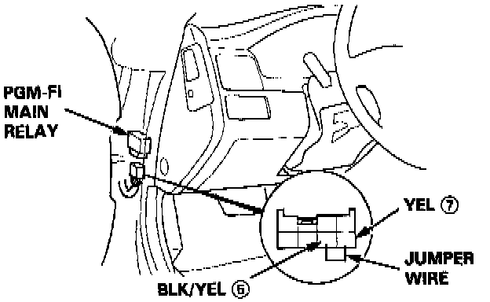
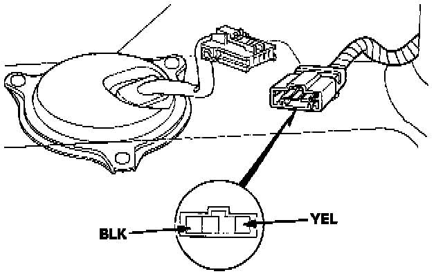

Fuel Pump: Testing and Inspection
INSPECTIONWARNING: Do not smoke during the test. Keep open flame away from your work area.
Note: If you suspect a problem with the fuel pump, check that the fuel pump actually runs; when it is ON, you will hear some noise if you hold your ear near the fuel fill port with the fuel fill cap removed. The fuel pump should run for two seconds when the ignition switch is first turned on. If there is no noise at the fuel fill port, check as follows:
1. Remove the trunk floor.
2. Disconnect the 4P connector.
CAUTION: Be sure to turn the ignition switch OFF before disconnecting the wires.

3. Disconnect the PGM-FI main relay connector and connect the BLK/YEL [5] wire and YEL [7] wire with a jumper wire.

4. Check that battery voltage is available at the fuel pump connector when the ignition switch is turned ON (positive probe to the YEL wire, negative probe to the BLK wire).
- If battery voltage is available, replace the fuel pump.
- If there is no voltage, check the fuel pump ground and wire harness.